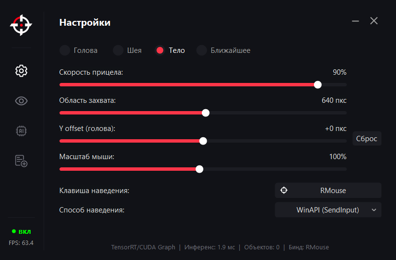

Настройки
Наведение под твой сценарий.
Скорость, область захвата и точка наведения — рядом, без поиска по разным окнам.
- Точка наведения
- Голова, шея, тело или ближайшее
- Движение
- Скорость, Y offset и масштаб мыши
- Управление
- Клавиша и способ наведения